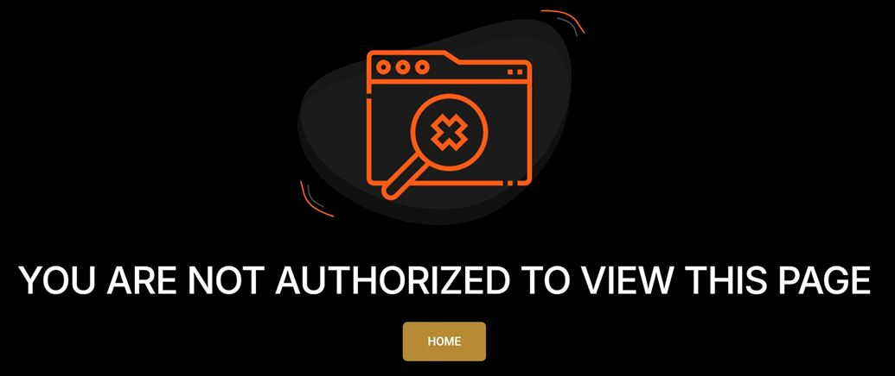
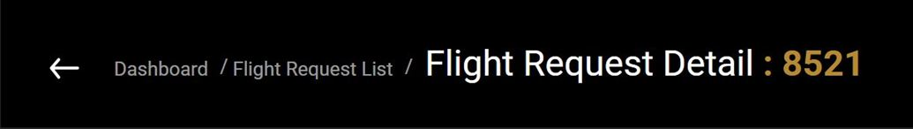

Case 12 · SCNS, UAE
Security fixes and safe navigation
In 2025 I worked through security findings in the first-generation app, from how attachments are opened to how every page builds its breadcrumb.
- React
- Snyk
- SonarQube
The problem
Attachments opened from public links, and the breadcrumb was a 990-line chain of if statements that security scans flagged.
My part
- Attachments fetched through authenticated requests as files, from one button used on 10 screens.
- Shared helpers for safe links and bulk downloads, used across 15+ files.
- Allow-listed IDs in history links, and an unauthorised page for expired sessions.
- The breadcrumb rewritten as a route map with a resolver and a safe-route check.
- SonarQube and Snyk fixes and dependency updates.
Result
Attachments open only through authenticated requests, and breadcrumb links can only point inside the app.
// breadcrumbs from a route map instead of // a 990-line chain of if statements const routeMatchers = [ { test: /^\/flight-view-page\//, key: "flightView" }, { test: /^\/commercialorg\/view\//, key: "orgView" }, // … ]; const resolveCrumbs = (path) => { const match = routeMatchers .find((m) => m.test.test(path)); return match ? breadcrumbMap[match.key] : []; }; // only known in-app paths can be followed const safeRoute = (to) => { const external = /^(https?:|\/\/|javascript:|data:)/i; if (external.test(to)) return "/"; const known = allowedPrefixes .some((p) => to.startsWith(p)); return known ? to : "/"; };



